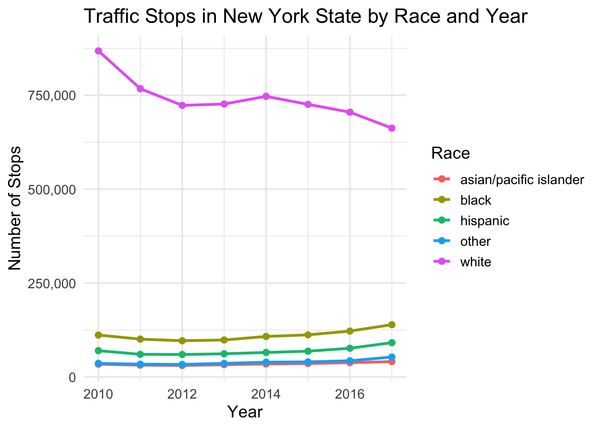
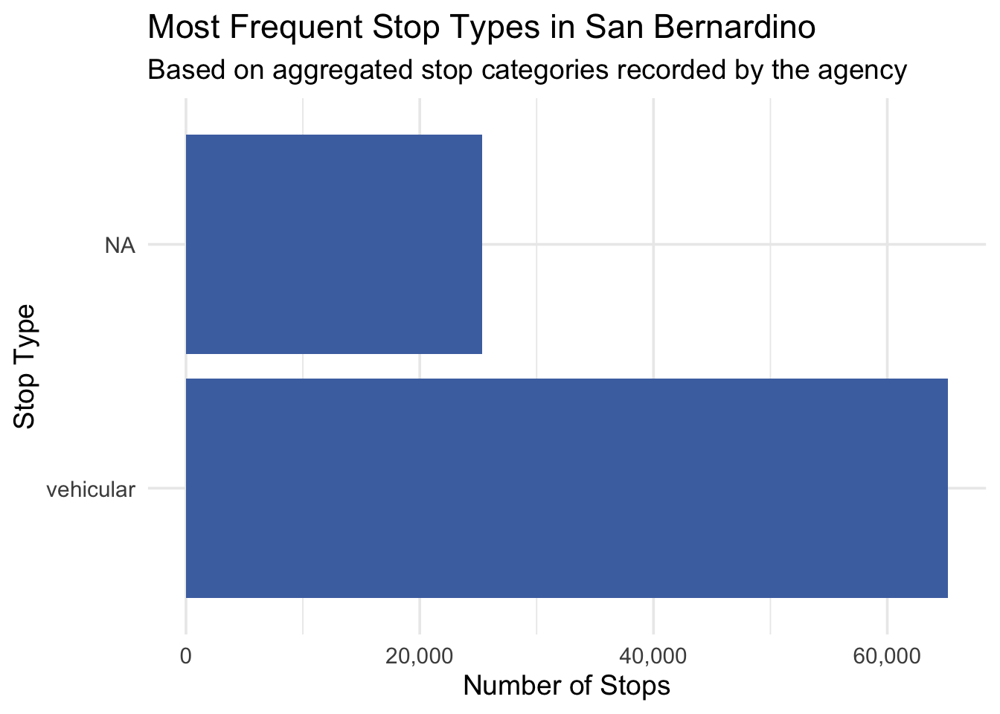
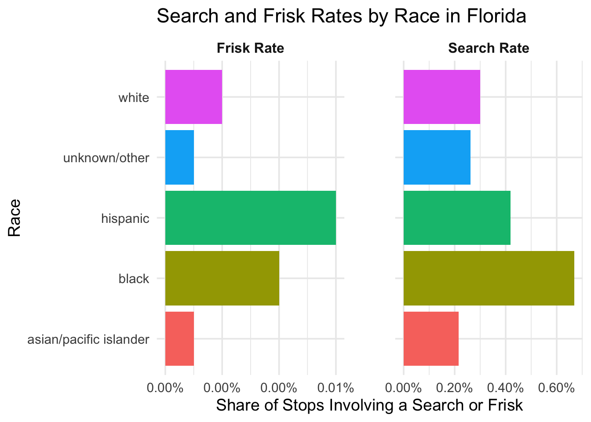

SQL-based Analysis of Traffic Stop Patterns Across U.S. Agencies
Author
William Walz
Published
December 6, 2025
Using SQL and R, this project explores how traffic stop data is structured across three U.S. agencies in the Stanford Open Policing Project (SOPP) database (Pierson et al., 2020). My objective is descriptive: I summarize what the dataset records rather than inferring motivations or making causal claims behind the policing practices.
I begin by examining how the racial composition of recorded stops in New York State changes over time. Next, I compare Long Beach and San Bernardino to demonstrate how different agencies categorize stop types. Finally, I analyze search and frisk rates in Florida to see how they differ across racial categories while accounting for ambiguous or missing values.
Accessibility Note: All data visualizations in this report include alternative text (alt text) descriptions to ensure the findings are accessible to users with screen readers.
Racial Distribution of Traffic Stops Over Time: New York State
To begin the analysis, I examine how the racial composition of recorded traffic stops in New York State changed between 2010 and 2018. The SQL query below groups stops by race and year and counts the number of stops in each category. Because the total number of enforcement actions varies across years, I convert these counts into percentages in R to allow for consistent comparison.
SELECT subject_race AS race,COUNT(*) AS n_stops,YEAR(date) ASyearFROM ny_statewide_2020_04_01WHERE subject_race ISNOTNULLGROUPBY race, yearHAVINGyearBETWEEN2010AND2018;
Visualization: Trends in Recorded Stops
Show code
library(ggplot2)library(bit64)library(dplyr)library(scales)ny_stops_clean <- ny_stops |>mutate(across(where(bit64::is.integer64), as.integer))ny_stops_pct <- ny_stops_clean |>group_by(year) |>mutate(total_stops_year =sum(n_stops),pct = n_stops / total_stops_year ) |>ungroup()ggplot(ny_stops_pct, aes(x = year, y = pct, color = race)) +geom_line(linewidth =1.1) +geom_point(size =2) +scale_y_continuous(labels =percent_format(accuracy =1)) +labs(title ="Percent of Traffic Stops in New York State by Race and Year",x ="Year",y ="Percent of Stops",color ="Race" ) +theme_minimal(base_size =14)

Trends in Racial Comparison
The figure shows how the racial composition of recorded traffic stops in New York State changed between 2010 and 2018. Across all observed years, the majority of stops in this dataset involved individuals classified as white, although that share gradually declined from roughly 78% in 2010 to around 70% by 2018. Conversely, stops involving Black and Hispanic drivers show slight increases over the same period; Black stops rose from about 10% to approximately 15%, and Hispanic stops increased from roughly 6% to about 9%.
These percentages reflect the distribution within the stop dataset itself, not the demographics of the total population or the driving population. Therefore, the trends describe how the administrative record has shifted, rather than proving a change in policing strategy or population behavior.
Comparing Stop Types: Long Beach vs. San Bernardino
For the second part of the analysis, I compare how different agencies categorize traffic stops. Both Long Beach and San Bernardino report stop types, but neither provides detailed violation codes. To compare them efficiently, I use a SQL UNION to combine the datasets directly in the query. This approach allows me to standardize the city labels before bringing the data into R.
Show code
(SELECTtypeAS stop_type,COUNT(*) AS type_count,'Long Beach'AS cityFROM ca_long_beach_2020_04_01GROUPBY stop_type)UNION(SELECTtypeAS stop_type,COUNT(*) AS type_count,'San Bernardino'AS cityFROM ca_san_bernardino_2020_04_01GROUPBY stop_type);
Visualization: Comparing Stop Type Distributions Across Two Agencies
Show code
library(ggplot2)library(dplyr)library(scales)# Clean up NAs for visualizationcombined_types <- ca_stops_combined |>mutate(across(where(bit64::is.integer64), as.integer)) |>mutate(stop_type =ifelse(is.na(stop_type) | stop_type =="", "NA/Unknown", stop_type) ) |>group_by(city) |>mutate(stop_type =reorder(stop_type, type_count)) |>ungroup()ggplot(combined_types, aes(x = stop_type, y = type_count)) +geom_col(fill ="#4C72B0") +coord_flip() +scale_y_continuous(labels = comma) +facet_wrap(~ city, nrow =1, scales ="free_x") +labs(title ="Distribution of Stop Types Across Two California Agencies",subtitle ="Long Beach vs. San Bernardino (SOPP Data)",x ="Stop Type",y ="Number of Stops" ) +theme_minimal(base_size =14)

Reporting Conventions by Agency
The two agencies report broadly similar structures in their stop type distributions: both record overwhelmingly more vehicular stops than any other category. This consistency aligns with the expectation that traffic stop databases primarily capture driver interactions. However, Long Beach reports a noticeably larger number of stops classified as “pedestrian” compared with San Bernardino.
This difference does not necessarily imply different enforcement intensity. Rather, the variation may reflect differences in population density or reporting conventions. Additionally, both agencies include stops labeled “NA” or with empty strings. Because the SOPP documentation notes that some agencies merge multiple non-vehicular stop types (Pierson et al., 2020), the “NA” category likely captures a mixture of poorly coded data rather than a specific type of stop.
Search and Frisk Rates by Race: Florida
In the final section, I analyze how often police searches and frisks occur during traffic stops in Florida. The dataset includes flags for search_conducted and frisk_performed. Before computing rates, I categorize ambiguous racial categories (NA, “unknown”, “other”) into a single group to prevent misinterpreting missing data as a substantive demographic finding.
Show code
SELECTCASEWHEN subject_race ISNULLOR subject_race IN ('other', 'unknown', '') THEN'unknown/other'ELSE subject_raceENDAS race,COUNT(*) AS total_stops,SUM(CASEWHEN search_conducted =1THEN1ELSE0END) AS num_searches,SUM(CASEWHEN frisk_performed =1THEN1ELSE0END) AS num_frisk,1.0*SUM(CASEWHEN search_conducted =1THEN1ELSE0END) /COUNT(*) AS search_rate,1.0*SUM(CASEWHEN frisk_performed =1THEN1ELSE0END) /COUNT(*) AS frisk_rateFROM fl_statewide_2020_04_01GROUPBY race;
Visualization: Disparities in Post-Stop Outcomes
Show code
library(dplyr)library(ggplot2)library(scales)library(tidyr)fl_search_long <- fl_search |>mutate(across(where(bit64::is.integer64), as.integer)) |>select(race, search_rate, frisk_rate) |>mutate(race =factor(race)) |>pivot_longer(cols =c(search_rate, frisk_rate),names_to ="metric",values_to ="rate" ) |>mutate(metric =recode( metric,"search_rate"="Search Rate","frisk_rate"="Frisk Rate" ) )ggplot(fl_search_long,aes(x = race, y = rate, fill = race)) +geom_col() +facet_wrap(~ metric, ncol =2, scales ="free_x") +coord_flip() +scale_y_continuous(labels =percent_format(accuracy =0.01)) +labs(title ="Search and Frisk Rates by Race in Florida",x ="Race",y ="Share of Stops Involving a Search or Frisk" ) +theme_minimal(base_size =14) +theme(legend.position ="none",strip.text =element_text(size =12, face ="bold"),panel.spacing.x =unit(3, "lines") )

Analysis of Search and Frisk Rates
In the Florida dataset, searches occur more frequently than frisks, though both events are rare relative to the total number of stops. Frisk rates are particularly low, generally falling below 0.5% for all groups.
Despite the low overall frequency, the data indicates that Black drivers experience the highest rates of both searches and frisks, followed by Hispanic and White drivers. The ambiguous category (“unknown/other”) was separated to avoid skewing the results, as raw data inspection revealed unusually high frisk rates for missing values—likely a sign of data entry error rather than a trend. These results describe the disparities recorded in the administrative logs, but without controlling for context (such as the reason for the stop), they represent descriptive correlations rather than causal evidence of bias.
Conclusion
This project utilized three distinct subsets of the SOPP database (Pierson et al., 2020) to characterize how traffic stops are recorded across different jurisdictions.
New York: The racial composition of recorded stops has shifted slightly over time, with the proportion of stops involving Black and Hispanic drivers rising between 2010 and 2018.
California: Comparing Long Beach and San Bernardino reveals that while vehicular stops dominate both datasets, agencies differ in their capture of pedestrian interactions.
Florida: Analysis of post-stop outcomes highlights that Black drivers have the highest recorded search and frisk rates, though these events remain rare overall.
These findings underscore the importance of understanding data definitions and reporting conventions before drawing broad conclusions about policing from administrative data.
References
Pierson, E., Simoiu, C., Overgoor, J., Corbett-Davies, S., Jenson, D., Shoemaker, A., Ramachandran, V., et al. (2020). “A Large-Scale Analysis of Racial Disparities in Police Stops Across the United States.” Nature Human Behaviour, 1–10.
Stanford Open Policing Project (SOPP) Data. Traffic stop data compiled by the Stanford Open Policing Project and accessed through the Pomona College SQL server. Original dataset and documentation available at: https://openpolicing.stanford.edu. Pierson et al. (2020).